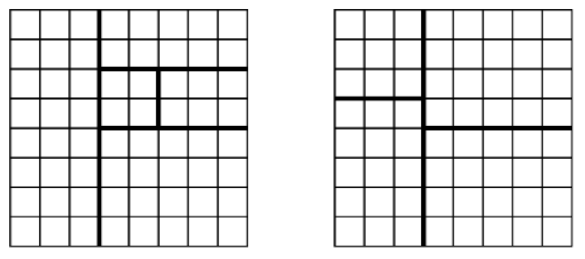

将一个８×８的棋盘进行如下分割：将原棋盘割下一块矩形棋盘并使剩下部分也是矩形，再将剩下的部分继续如此分割，这样割了 ($n-1$) 次后，连同最后剩下的矩形棋盘共有 $n$ 块矩形棋盘。(每次切割都只能沿着棋盘格子的边进行)

允许的分割方案 不允许的分割方案
原棋盘上每一格有一个分值，一块矩形棋盘的总分为其所含各格分值之和。现在需要把棋盘按上述规则分割成 $n$ 块矩形棋盘，并使各矩形棋盘总分的均方差最小。
均方差 $\sigma=\sqrt{\frac{\sum^n_{i=1}(x_i-\bar{x})^2}{n}}$，其中平均值 $\bar{x}=\frac{\sum^n_{i=1}x_i}{n}$，$x_i$ 为第 $i$ 块矩形棋盘的分。
请编程对给出的棋盘及 $n$，求出 $\sigma$ 的最小值。
 Comet OJ
Comet OJ